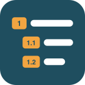

Headmark adds outline numbers to the headings of a Confluence page: 1, 1.1, 1.1.1. You see a preview first. Nothing changes until you click Apply. Headmark can also remove the numbers again.
To remove the numbers, click "Preview removal" and then "Remove numbers".
Each change is a normal page version. To undo it, restore the previous version from the page history.
| Option | What it does | Default |
|---|---|---|
| From level, To level | Only headings in this range get numbers | Heading 1 to Heading 3 |
| End of number | "1.2" or "1.2." | 1.2 |
| Numbers already in the headings | Replace them, or keep the text as it is | Replace |
| Number format (paid) | 1.1.1, 1.a.i, I.A.1 or A.1.a | 1.1.1 |
| Start at (paid) | The number of the first top-level heading, for example 3 for chapter 3 | 1 |
With "Replace" on, Headmark also removes numbers that a person typed, but only in clear cases: "3", "3.", "3.2", "A.1", "B." or "IV." followed by a space. Text such as "2024 plans", "A new start" or "I think" stays as it is. Look at the preview before you apply.
Headmark is paid via Atlassian, with a free core. It is free for up to 10 users.
| Feature | Free | Paid |
|---|---|---|
| Decimal numbers 1, 1.1, 1.1.1 | Yes | Yes |
| Level range, dot at the end, replace or keep existing numbers | Yes | Yes |
| Preview and remove numbers | Yes | Yes |
| Number formats 1.a.i, I.A.1 and A.1.a | No | Yes |
| Start number other than 1 | No | Yes |
When a site has no active subscription or trial, a paid option shows this message: "Number formats other than 1.1.1 is a paid feature of Headmark. A Confluence admin can start a free trial or subscribe in Manage apps." The free features keep working. Numbers that are already on a page stay there when a subscription ends.
Headmark runs on Atlassian Forge. It has no outside servers, and it sends no data out of your Confluence site. It stores no data.
| Scope | Why |
|---|---|
read:page:confluence | Read the page body to find the headings, as the signed-in user |
write:page:confluence | Write the new page version, as the signed-in user |
All calls run as the person who uses the action. So Headmark can only change pages that this person can edit. See the privacy page for details.
Email support@zovo.one. You do not need a GitHub account. The support page is https://theluckystrike.github.io/zovo-plugin-factory/apps/forge-headmark/support.html.
If this app saves you time, you can support the work on GitHub Sponsors. Monthly tiers start at $5, and one-time tiers start at $15. Sponsorship is optional, and the tool works the same without it.